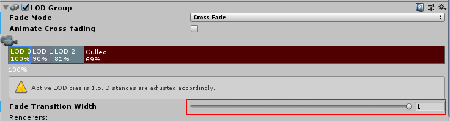

Cross Fade Shader
- LOD 변환시 블렌딩

| Name | 설명 |
|---|---|
| FadeMode - CrossFade | 현재 LOD와 다음 LOD사이에 CrossFade 스타일 블렌딩을 수행 |
| Fade Transaction Width | CrossFade 전환 영역의 비율 |
| unity_LODFade | x : fade [0 .. 1] - [-1 .. 0], y is fade quantized to 16 levels, z, w 사용안함. |
// LOD_FADE_CROSSFADE 정의는
// |- LOD Group 컴포넌트에서
// |- Fade Mode : Cross Fade
// |- 그리고 각 LOD에서 Fade Transition Width값이 0이 아닐때 활성화가 된다.
// 현재 LOD가 `1`에서 `0`으로, 다음 LOD가 `-1`에서 `0`로 전환된다.
// 예)
// RootGameObject | FadeMode : CrossFade
// - Sphere | LOD : 2, Fade Transaction Width : 0.3
// - Cube | LOD : 1, Fade Transaction Width : 0.2
#pragma multi_compile _ LOD_FADE_CROSSFADE
TEXTURE2D(_DitherTex); SAMPLER(sampler_DitherTex);
float4 _DitherTex_TexelSize;
SAMPLER(unity_DitherMask); // 유니티가 4x4 디더링 마스크를 제공해준다.
#ifdef LOD_FADE_CROSSFADE
half2 screenUV = IN.positionNDC.xy / IN.positionNDC.w;
float fade = unity_LODFade.x;
// ex-1
// float dither = (IN.positionCS.y % 32) / 32;
// clip(fade - dither);
// ex-2
// half ditherTex = SAMPLE_TEXTURE2D(_DitherTex, sampler_DitherTex, IN.uv).r;
// clip(fade - ditherTex);
// ex-3
//float2 ditherUV = screenUV.xy * _ScreenParams.xy * _DitherTex_TexelSize.xy;
//half ditherTex = SAMPLE_TEXTURE2D(_DitherTex, sampler_DitherTex, ditherUV).r;
//clip(fade - CopySign(ditherTex, fade));
// ex-4
// float2 fadeMaskSeed = IN.positionCS.xy;
// LODDitheringTransition(fadeMaskSeed, fade);
// ex-5
//float2 ditherUV = screenUV * _ScreenParams.xy;
//float DITHER_THRESHOLDS[16] =
//{
// 1.0 / 17.0, 9.0 / 17.0, 3.0 / 17.0, 11.0 / 17.0,
// 13.0 / 17.0, 5.0 / 17.0, 15.0 / 17.0, 7.0 / 17.0,
// 4.0 / 17.0, 12.0 / 17.0, 2.0 / 17.0, 10.0 / 17.0,
// 16.0 / 17.0, 8.0 / 17.0, 14.0 / 17.0, 6.0 / 17.0
//};
//uint index = (uint(ditherUV.x) % 4) * 4 + uint(ditherUV.y) % 4;
//clip(fade - CopySign(DITHER_THRESHOLDS[index], fade));
// ex-6
float2 ditherUV = screenUV.xy * _ScreenParams.xy / 4.0;
float dither = tex2D(unity_DitherMask, ditherUV).a;
clip(fade - CopySign(dither, fade));
#endif
// built-in
// CGIncludes/UnityCG.cginc
#ifdef LOD_FADE_CROSSFADE
#define UNITY_APPLY_DITHER_CROSSFADE(vpos) UnityApplyDitherCrossFade(vpos)
sampler2D unity_DitherMask;
void UnityApplyDitherCrossFade(float2 vpos)
{
vpos /= 4; // the dither mask texture is 4x4
float mask = tex2D(unity_DitherMask, vpos).a;
float sgn = unity_LODFade.x > 0 ? 1.0f : -1.0f;
clip(unity_LODFade.x - mask * sgn);
}
#else
#define UNITY_APPLY_DITHER_CROSSFADE(vpos)
#endif
float2 vpos = IN.screenPos.xy / IN.screenPos.w * _ScreenParams.xy;
UnityApplyDitherCrossFade(vpos);
// URP
// com.unity.render-pipelines.core/ShaderLibrary/Common.hlsl
void LODDitheringTransition(uint2 fadeMaskSeed, float ditherFactor)
{
// Generate a spatially varying pattern.
// Unfortunately, varying the pattern with time confuses the TAA, increasing the amount of noise.
float p = GenerateHashedRandomFloat(fadeMaskSeed);
// This preserves the symmetry s.t. if LOD 0 has f = x, LOD 1 has f = -x.
float f = ditherFactor - CopySign(p, ditherFactor);
clip(f);
}
float CopySign(float x, float s, bool ignoreNegZero = true)
{
#if !defined(SHADER_API_GLES)
if (ignoreNegZero)
{
return (s >= 0) ? abs(x) : -abs(x);
}
else
{
uint negZero = 0x80000000u;
uint signBit = negZero & asuint(s);
return asfloat(BitFieldInsert(negZero, signBit, asuint(x)));
}
#else
return (s >= 0) ? abs(x) : -abs(x);
#endif
}
float fade = unity_LODFade.x;
float2 fadeMaskSeed = IN.positionCS.xy;
LODDitheringTransition(fadeMaskSeed, fade);
Ref
- https://docs.unity3d.com/Manual/class-LODGroup.html
- https://github.com/keijiro/CrossFadingLod
- https://blog.naver.com/daehuck/221562275385
- NDC2018 - 'AxE' 클라이언트 최적화와 문제해결-MMORPG를 Unity로 만들 때 겪을 수 있는 이야기
- https://assetstore.unity.com/packages/add-ons/lcfs-lod-cross-fading-shaders-for-urp-177298?locale=ko-KR#content
- LOD asset